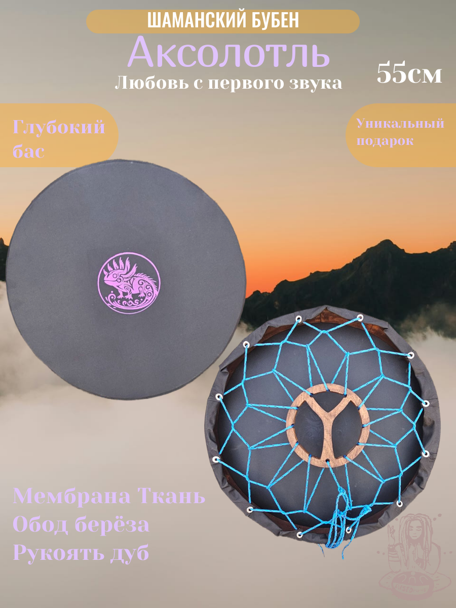
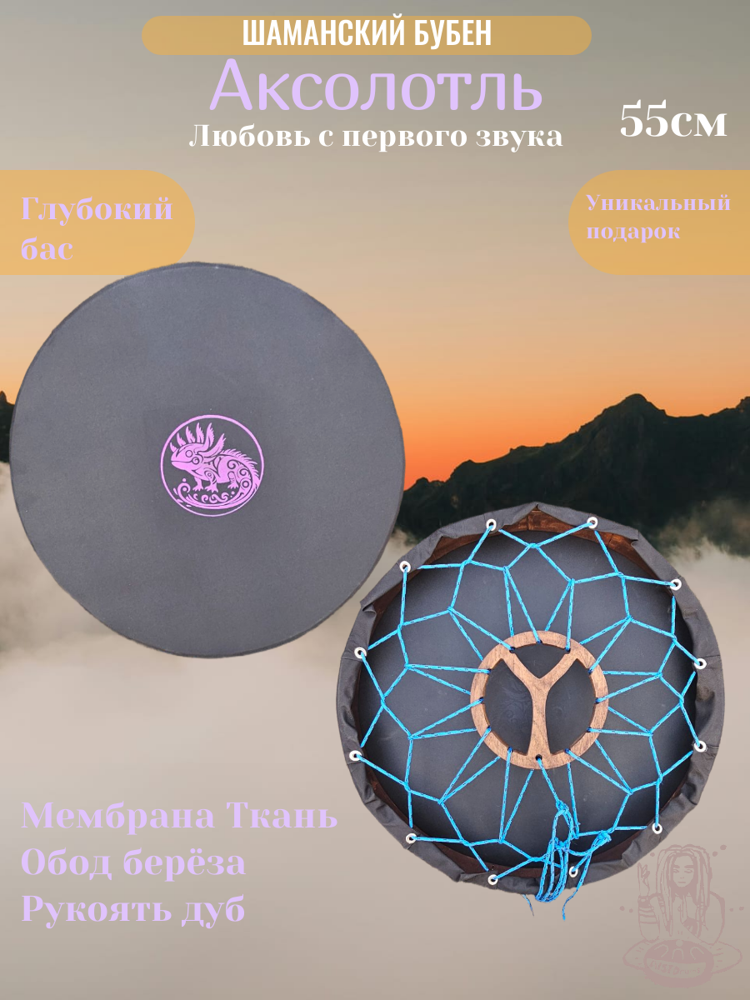

Бубен 55 см "Аксолотль"
Цена: 15000 ₽
Шаманский бубен с глубоким басом. Обод из берёзы, рукоять из дуба, мембрана — плотная ткань. Подходит для ритуальных и концертных выступлений.
Цена: 15000 ₽
Шаманский бубен с глубоким басом. Обод из берёзы, рукоять из дуба, мембрана — плотная ткань. Подходит для ритуальных и концертных выступлений.
